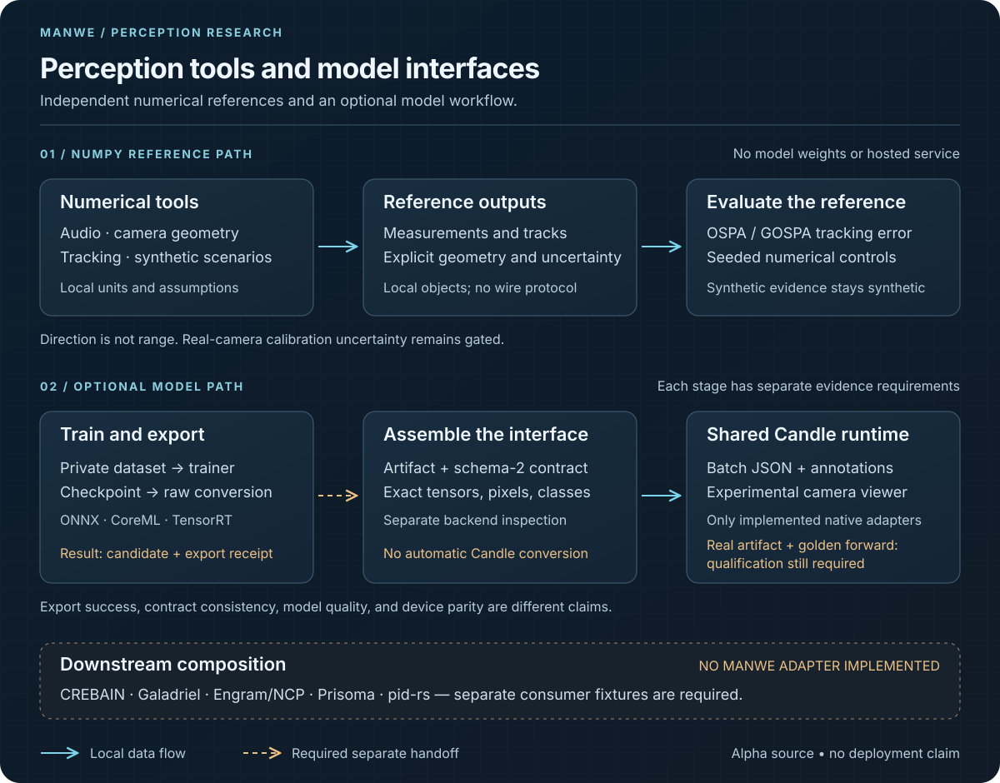

Manwe architecture
Explore the numerical reference path and the optional model workflow. Each path preserves its own evidence and ownership boundaries.

Text description
NumPy tools produce local measurements, tracks, and tracking metrics. They need no model weights or hosted service. Synthetic controls do not establish real-world accuracy.
Optional Python training and raw export produce candidate weights and export receipts. Separate backend inspection and a compatible artifact are required for a schema-2 package.
The shared Candle runtime implements native batch and viewer paths. A real artifact and golden forward remain required. No checked-in converter completes that handoff.
Solid arrows indicate local data flow. Dashed arrows indicate a required separate handoff. Neither style grants deployment or scientific authority.
No Manwe adapter connects CREBAIN, Galadriel, Engram/NCP, Prisoma, or pid-rs. Each consumer still requires its own versioned adapter and fixtures.
Read the architecture guide and model contracts for exact requirements.